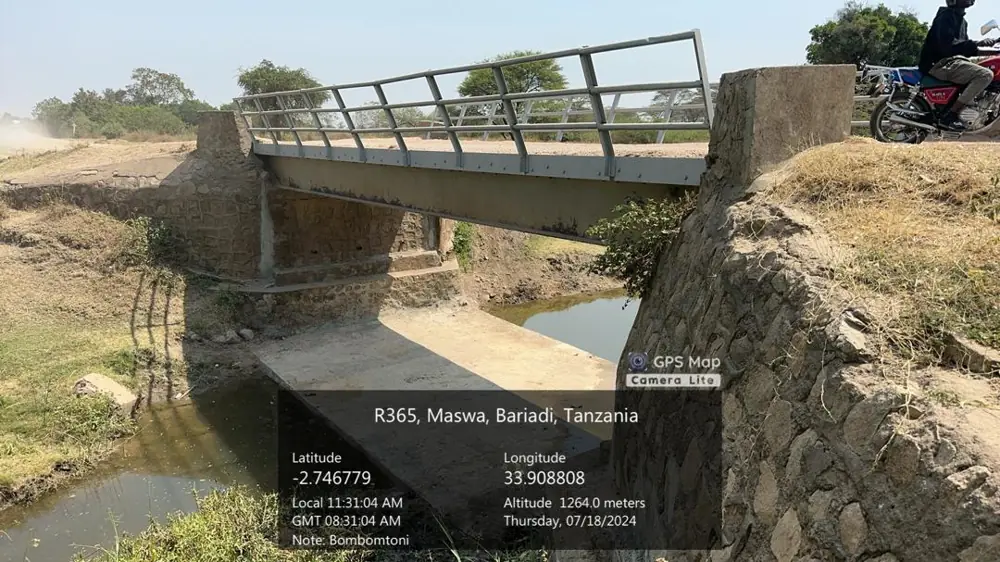

Water Resources & Hydrology
Understanding how water moves, and designing structures and systems that work with it.
- Hydrological & hydraulic studiesDesign floods, bridge waterway adequacy, scour and culvert sizing for roads, airports and dams.
- Flood risk & early warningFlood mapping, scenario modelling and monitoring networks for basins and cities.
- Water supply & irrigationYield, demand and reservoir analysis, plus groundwater and surface water assessment.
SWAT+HBVHEC-HMSHEC-RAS 1D/2DEPANET